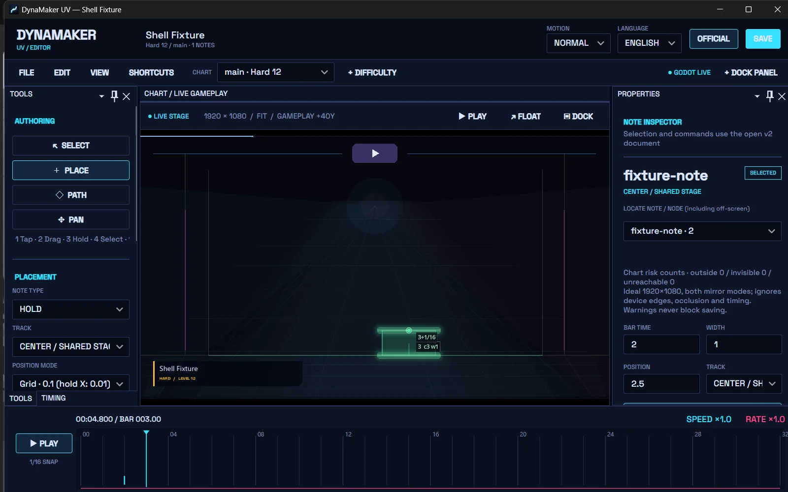
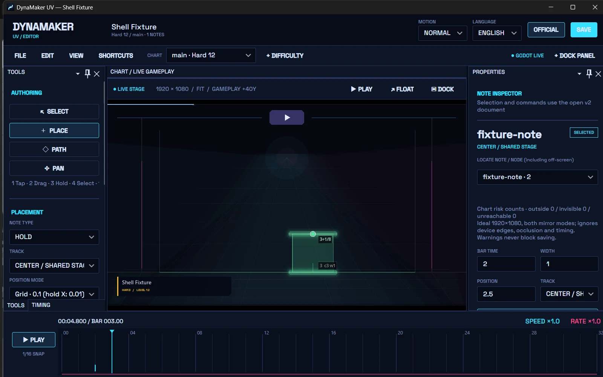

DynaMaker UV / 制谱入门
用四拍开始制谱
先听一遍练习音频：每四声里，第一声更高。我们从第二组的高音开始，暂停时在四个拍点上各放一颗音符，再按空格听它们是否对齐。
这是 Windows 版 DynaMaker UV 的教程，与旧版 DynaMaker 的操作不完全相同。第一次用，可以先做到四拍练习，按保存步骤把谱带走。想写长音或换一个难度时，再回来找相应的章节。三张工作台截图用的是另一份合成示例谱，图里的曲名和时间不必照抄。
01 / 准备
准备制谱器和一段音频
- 把完整的 Windows 制谱器包解压到一个普通文件夹，运行根目录里的
DynaMakerUV.exe。保留它旁边的文件夹；只取出一个 exe，中央舞台可能启动不了。 - 自选音乐请用你有权使用的 WAV、MP3、Ogg Vorbis 或 FLAC。FLAC 最大 64 MiB；M4A、AAC 和 Opus 不能用于这套预览和保存流程。刚开始选一首拍子清楚、知道 BPM 的短曲，会容易听出偏差。
软件包请看 GitHub Releases。若页面上没有制谱器下载项，不要把游戏包当成制谱器；从源码运行请看编辑器启动说明。拿到带 Uninstall.cmd 的便携测试包时，可用它卸载清单中未改动的程序文件；谱包、额外文件和个人偏好会保留。
谱包（Package）是存放歌曲信息、音频、可选封面和谱面的文件夹。包里每一张独立的谱叫一个差分（Chart / Difficulty）。同一首歌想写简单和困难两版，可以放在同一个包里。
02 / 工作台
先找到舞台、工具和播放头
新版先显示深灰色起始页。第一次跟练，点「新建谱面包」（Ctrl+N）；已有谱包则点「打开谱面包」（Ctrl+O），选整个谱包目录。新建或打开成功后，才会看到下图的舞台和编辑面板。旧测试包若直接显示工作台，同样可以按 Ctrl+N 开始。
如果界面是英文，在右上角 LANGUAGE 选「简体中文」，菜单和面板会切换到中文。截图保留了英文：左边 TOOLS 选动作，中间舞台放音符，右边 PROPERTIES 改选中对象。底部时间轴上带三角的竖线是播放头，表示你现在听到、看到哪里。

| 去哪里 | 可以做什么 |
|---|---|
| 顶部「文件」/ FILE | 新建、打开、保存整个谱包；管理当前差分与音频。旁边「当前差分」下拉框负责切谱。 |
| 「编辑」/ EDIT | 撤销、重做、复制音符、粘贴到播放头或删除选择。 |
| 「工具」和「对轨」 | 在工具页选轨道和音符；在对轨页管理这一差分的 BPM 与 Scroll 事件。 |
| 实时舞台和「属性」 | 先在舞台上点中音符，再看右边的 ID、时间、宽度和位置。需要找屏幕外的对象也从属性面板进。 |
| 底部播放栏 | 点播放或暂停，点按或拖动时间轴来定位。上方细条可以跳到全曲任意段落；下方显示当前面附近八小节的节奏。短刻线是起音，连续带是长音，Hold 带内的刻痕是要判定的节点。切面不跳时间，按住下条拖动时小节刻度不会跟着跑。 |
给舞台腾位置，也能把面板找回来
- 点面板的标题栏图钉，可以把它收成窗口边缘的标签。点边缘标签展开，再点图钉固定。属性面板里的折叠箭头只收起一组字段，不会把整块面板挪走。
- 字段挤在一起时，拖面板和舞台之间的分隔线；要换面板停靠位置，拖标题或标签。鼠标放在侧栏里滚动才能看到下方的表单，放在舞台上滚动则会移动播放时间。
- 想让舞台单独占一个窗口，点「浮动」/ FLOAT 或按 Ctrl+Shift+F。「停靠」/ DOCK、Ctrl+Shift+D 或关闭这个浮动舞台窗口都会让它归位，谱还开着。面板找不到时，点顶部「视图」/ VIEW 恢复舞台、工具、对轨、属性和基本宽度。
右上「+ 停靠面板」、工具页「+ 音频分析」和 Ctrl+Shift+A 都能打开音频分析面板；它还不能生成波形。顶部「动效」可选标准、轻量或最少，调的是工作台按钮等界面动画。舞台的命中特效在右键菜单里另调。「官方主题」目前没有其他主题可换。
关窗后，工作台会记住布局、语言、动效、时间网格、位置模式、放置宽度、滚轮方向和预览音量、特效。播放状态、音乐倍率、选区和复制过的音符不会留到下一次启动。
左边选工具，下面定放置规则
| 工具 | 在舞台上试的动作 |
|---|---|
| 放置 / PLACE | 新增音符。先选 NOTE 类型、轨道、初始宽度，再把鼠标移到舞台上看预览。这些设置只管接下来放的音符。 |
| 选择 / SELECT | 按 4，再点已有音符、拖动它或框选一段。只想改已有音符宽度，就用这个工具或右侧属性。 |
| 路径 / PATH | 在已有 HOLD 或 MIXER 的身体上双击，加一个可拖的节点。创建长条本身仍用「放置」。 |
| 平移 / PAN | 横拖移动视图，纵拖移动预览时间；按住 Shift 拖动则只平移二维视图。音符仍留在原来的谱面位置。 |
网格有两套。底部的 1/n 表示时间按一小节的几分之一吸附，由 C / V 调整。左边「位置模式」管轨内坐标和宽度：网格模式下中心按 0.1、宽度按 0.05 取步长，按住 X 两者临时细到 0.01；「自由」允许连续调整。按住 Z 只临时放开手势的时间吸附。右侧属性中的精确输入不受这两套网格取整。
「审核」/ REVIEW 和「打包」/ PACKAGE 还不能切换到可用的工作区。保存谱面走「文件」菜单。
03 / 新建谱包
把练习节拍放进第一个谱包
- 点「文件 → 新建谱面包」（FILE → NEW PACKAGE），或按 Ctrl+N。曲名可以填「四拍练习」；曲师填音乐作者，谱师填制谱者。点「浏览」选刚下载的 WAV，封面先留空。
- 在 PACK ID 填
my-first-pack，CHART ID 填easy。它们用来识别包和谱，可以和显示的曲名不同。ID 以英文字母或数字开头，后面还可用点、下划线和短横线，最长 64 个字符。 - 选难度（如 CASUAL）和等级；没有定级就勾选「不定级 / UNRATED」。等级可填 1 到 99；选 CUSTOM 自定义难度时还要给它一个难度键。
- 把默认的初始 BPM 从 150 改成 120，音频偏移填 0 秒。点「创建草稿」/ CREATE DRAFT，顶部会出现曲名和当前差分，空舞台等你放第一颗音符。
谱面的小节号从 0 开始：0 是第一小节，1 是第二小节，以此类推。底部时间轴和属性里的 BAR TIME 都用这个编号。小节号不是音乐秒数，换算仍要看 BPM。
先别移动下载好的音频
创建草稿只是在内存里开了一张空谱。第一次保存时，制谱器才会把外部音频和可选封面复制进包。先放一颗单点，再按 Ctrl+S 选专用空文件夹；空白差分不能保存。
04 / 放置音符
在中轨放四拍单点
- 选中轨和四分之一小节。暂停播放，按 1 进入单点（TAP）放置。在「工具」里把轨道设为「中轨」，宽度填
1。点一下「放置」让光标离开数值框，再看底部吸附读数，用 C 调疏、V 调密，直到显示1/4。这段练习按 4/4 拍来数，1/4 小节是一拍，1/8 小节是半拍。 - 先看预览，再点鼠标。在底部时间轴上把播放头移到小节
1，对应练习音频的第 2 秒。鼠标移回舞台，半透明音符旁能读到小节时间、中心c和宽度w。另外两轨的导引线标出同一时刻；同一轨上的对齐标记提示已有音符同位置或同宽，不会把两颗吸到一起。 - 在时间
1松开左键。单击就沿用当前宽度；想改宽，按住左键沿轨道宽度方向拖，再松开。下一颗会沿用这次的宽度。放错了按 Ctrl+Z。现在就可以第一次保存，之后 Ctrl+S 会写回同一谱包。

听这四声：2、2.5、3、3.5 秒
把另外三颗同宽 TAP 放到 1+1/4、1+1/2、1+3/4。下一拍超出画面，就先松开鼠标，把底部播放头向前移一点，再回来放。小节编号从 0 开始；这段 120 BPM 音频的小节 1 开头正是第 2 秒。按 R 回到开头，再按空格播放：第二组较高的那声应该正好碰上第一颗，后三声各碰上一颗。
按 ↑ 会按中、左、右、中的顺序切换当前放置轨；也可以在「轨道」直接选。它还决定框选看哪条轨，但不会给已经放好的音符换轨。七种类型在三轨都能放：
| 放什么 | 玩家怎么读它 |
|---|---|
| 单点 TAP / 强化单点 EX TAP | 两者都要在到线时按下。TAP 有四档判定；EX TAP 在有效窗口内算 Perfect，窗外为 Miss。 |
| 滑动 DRAG | 已有触点经过就能接住，不用像 TAP 那样每一颗都重新按下。 |
| 保持 HOLD / MIXER | 从头延续到尾的路径。HOLD 要持续跟住，MIXER 要持续接住；如何画起点、尾点和转折见长条练习。 |
| 地雷 MINE / 小节线 BAR LINE | 地雷要避开：安全通过为 Perfect，危险时间内触碰为 Miss。小节线只是视觉标记，不计分，没有数字快捷键；在类型列表或舞台右键菜单选它。 |
05 / 编辑音符
把四拍移一移，再复制到下一小节
按 4 进「选择」/ SELECT。单击一颗 TAP，右侧会显示它的 ID。拖主体可移动，拖边缘则调宽：另一边固定，所以中心也会移动。先拖一次，松手看结果；Ctrl+Z 撤销一次，Ctrl+Y 重做一次。
- 选一组。按住 Shift 逐一点选，再点已选中的音符可把它移出选区。也可以在当前轨空白处按左键拖框，看高亮和数量再松手。框取的是该轨的谱面时间和中心坐标：头部中心在框内就选中整颗，长条身体擦过框边不算。要把另一轨也加进来，切轨后按住 Shift 再框。
- 一屏装不下时，边听边选。在播放中从空白处开始框，保持按住，选区终点会随播放推进，早先选到的音符即使离屏也保留在范围内。往回定位会缩小范围。松手才提交；右键或 Esc 取消这次框选，保留原选区。普通空白单击或空框会清空选择。选中后抓住组内一颗主体，可带着整组一起拖；只有抓取的锚点吸附，组内间隔不变。
- 把刚才四颗复制到小节 2。选中四颗，Ctrl+C，在底部时间轴把播放头放到
2，再按 Ctrl+V。最早的一颗落在按网格吸附后的播放头，其余三颗保留间距和各自的轨道位置。此时被选中的是新的一组；若贴错，撤销一次就能移除整组。
「编辑」菜单也能复制、粘贴、撤销、重做和删除。剪贴板保留的是整颗音符，包括长条路径、曲线、判定开关和音符流速；同一次工作台会话里可以跨差分、跨包粘贴。它不读系统剪贴板，也不会贴到鼠标位置。选好后按 Delete 或 Backspace 删除；若选中的是单个路径节点，删除的就是那个节点。
属性面板：用数值对准一颗音符
看右侧属性标题，先认准要改的音符或节点。舞台看不见它时，展开「定位 Note / 节点」，按 ID 和小节时间选择，播放头会跳到那里。点空白后字段变灰，表示还没有编辑对象。
| 字段 | 数值代表什么 |
|---|---|
| 小节时间 / BAR TIME | 2+1/4 是从小节 2 的开头再过四分之一小节。整数、分数、带分数和有限小数都可输入；不要填音乐秒数。 |
| 位置 / POSITION | 当前轨上的中心坐标。推荐范围是 0 到 5；中轨从左到右递增，两条侧轨都从下往上递增。左右换轨仍用同一套谱面单位。 |
| 宽度 / WIDTH | 是总宽，不是半宽或像素。中心 2.5、宽 1，两边就是 2 和 3。保持中心不变，把宽度填成 2，两边会各向外扩 0.5。精确输入的宽度必须是有限正数。 |
| 应用精确几何 | 把上面三个字段一起提交。精确数值不按网格取整；切到别的对象前先点「应用」。 |
| 应用类型 / 轨道 | 单选音符本身后可改类型或轨道，再点这一项。只选路径节点不能给节点单独换轨。单颗长条改成短音符会去掉路径；反向转换会先给一个网格步长的尾点。不想保留结果就撤销。 |
练一次精确定位，再把这颗 TAP 换到左轨
单击原来小节 1 开头的 TAP，填小节时间 2+1/4、位置 2.5、宽度 1，点「应用精确几何」。为避免与复制出来的中轨音符重叠，再选「左轨」，点「应用类型 / 轨道」。从定位列表按 ID 找到它，核对三个数值。按一次 Ctrl+Z 撤回换轨，再按一次撤回刚才的几何调整。回到小节 1，确认原来四颗的位置已经恢复。
在属性面板向下滚，展开「移动选择 · 一个吸附步长 / 0.1 位置」。时间按钮按当前一个时间网格步长前后挪，位置按钮每次增减 0.1 个轨内单位。选中节点时步进改节点；选中长条头、改变时间时，其余节点也平移同样的时间。这里还有「流速倍率」（默认 1），点「应用流速」会写进所选音符，整根长条共用一个倍率。
位置或边缘超出推荐区仍可保存。警告会区分「超出推荐区」「判定线处可能不可见」「检查到不可触达范围」；例如 MIXER 的头能接到，身体仍可能在屏幕外。它们按正常和镜像布局检查有限的路径采样，不会移动音符，也不能替你判断遮挡、设备边缘或手能否跟得上。
一次改整组：先看数量，再选要改的字段
选中刚粘贴的四颗音符，右侧会出现选区摘要、「整体变换」和「统一属性」。展开底下的「选中对象」点一行，只会定位，不会把其他三颗移出选区。
- 整段挪一拍。在「整体变换」选「时间偏移」，填
+1/4，点「应用变换」；四颗一起往后移一拍，间距不变。用-1/4可往前移。若改选「选区起点移至」，填4，就是把最早的音符移到小节 4。在 16 秒练习音频里不要把整段移到小节 8，那已经是音频末尾。 - 平移完整路径。「位置偏移」填
+0.2，沿每条轨自己的坐标方向移动。这个批量变换会带着 HOLD / MIXER 的头和全部节点一起走；单选时只改长条头部的中心，不会横移后面的节点。 - 给不同宽度的音符各加一点。「统一属性」里，「设为 1」把目标都改成宽 1；「增加／减少」填
0.1，则在各自宽度上加 0.1。长条默认只改头部，选「整个路径」才会改所有节点。若整条设成相同宽度，原来的收窄和变宽都会消失。 - 只提交要改的项。轨道和类型可保留「多个值／不修改」。整组换轨保留坐标，不自动镜像。批量改类型只支持 TAP、DRAG、EX TAP 之间互转。看清按钮上将应用的项数，再点「应用…项属性」。时间或位置输入框内按回车可提交变换；宽度输入框内按回车可提交属性。
这两组表单分别应用、分别撤销；有一项非法，整组不会改。修正原输入再应用，或点「重置输入」清掉尚未提交的内容。换选区会丢弃未应用的输入。需要整组同一流速或按步长移动，仍用下方「移动选择」。练习后撤回不想留的变化，按 Ctrl+S 才写入磁盘。
06 / 长条与路径
留两拍给一根长条
小节 1 和 2 有了单点，在小节 3 试一根从第一拍延续到第三拍的 HOLD。按 3 选 HOLD（中文音符列表里叫「保持」）；要画 MIXER 则按 6，头尾画法相同。
- 暂停，把播放头移到小节
3。要让头尾同时出现在舞台里，可以先按 Q 降低预览流速，如调到 0.5 倍。鼠标移到读数3处，按住左键调好头部宽度，松开。 - 现在头已经定好，尾点还跟着鼠标。移到更晚的
3+1/2，再按一下左键，整根长条才放好。只想取消这次草稿就点右键，舞台有焦点时也可按 Esc。 - 在工具页点「路径」/ PATH。双击长条身体中间，在
3+1/4附近插入一个节点，再把它沿轨道稍微拖向一侧，松手看转折。需要精确值时用右侧「小节时间、位置、宽度」。节点必须晚于头部，前后节点不能同刻或越序。

选一段曲线，要点它的起点
要改头到中间的一段，选头；要改中间到尾的一段，选中间节点。右侧往下找「路径曲线 / 下一节点」，选好点「应用曲线」。Linear / 线性让中心和宽度均匀过渡；Hold / 保持让它们一直保持到下一点才跳变。缓入是从慢到快，缓出是接近终点时放慢，缓入缓出则是两头慢、中间快。二次（Quad）、三次（Cubic）和正弦（Sine）都有这三种选法。Smooth / 平滑适合让连续几个节点之间的转向更顺。尾点后面没有下一段，不能设出向曲线。
PATH 可以拖动头或真实节点；SELECT 也能单独拖真实节点，按 Shift 则以所属音符为多选对象。拖长条头的时间，整条路径保持时差移动；只改头的中心或宽度，后续节点的中心和宽度仍在原处。曲线上的细分不是你放的节点，无法选中。
把刚插的 HOLD 中间节点选中，在「HOLD 节点判定」取消勾选，再点「应用节点判定」：弯还在，但这个节点不再单独计分。尾节点始终参与 HOLD 判定；MIXER 没有这个开关，也没有额外尾判。要删转折，选该节点按 Delete，不必删整条。至少要留一个尾节点。把播放头拉到头部稍前，按空格对比线性和缓出，再把预览流速恢复到你习惯的值。
07 / 对轨
听着不齐，先分清该调哪个数
先从头听四拍，再从后面听四拍。如果音符总比节拍早一点，在舞台已有键盘焦点时按 O 让当前差分晚 10 毫秒；太晚则按 P 提早 10 毫秒。按住 Shift 改为每次 1 毫秒，长按一轮可以一次撤销。也可在「对轨」顶部输入毫秒数并点「应用偏移」。这里的 +100 ms 与「谱面包 / 差分设置」里的 +0.1 秒相同：小节 0 在录音开始后 0.1 秒，别的差分不变。若开头能对上、后面越差越远，核对 BPM 或歌曲真正换速的地方。
| 参数 | 会改变什么 | 保存进谱包 |
|---|---|---|
| BPM | 决定小节时间对应哪些音乐秒数。120 BPM 时一拍 0.5 秒，本练习一小节 2 秒。 | 是，当前差分 |
| SCROLL 事件 | 改变该差分所有音符的视觉流速。音符在音乐里的命中时刻不动。 | 是，当前差分 |
| 属性里的「流速倍率」 | 与全局 Scroll、玩家流速相乘，只影响所选音符的视觉速度。HOLD / MIXER 的节点不另设流速。 | 是，所选音符 |
| 预览流速 / SPEED | Q 降、E 升，每次 0.1，范围 0.1 至 2.0 倍。画面疏密会变，音乐照常播。 | 否 |
| 音乐倍率 / RATE | W 升、S 降，每次 0.1，范围 0.2 至 2.0 倍。音乐和播放头一起快放或慢放。 | 否 |
在对轨面板试一次增、改、删
在舞台上按 ↓ 看正面的小节刻度；再按变亮，第三次关闭。← 和 → 分别管两个侧面，↑ 仍然切换放置面。线旁的数字是小节位置，这些线不会存入谱包。左栏切到「对轨」/ TIMING，偏移字段下方是 BPM，再往下是 SCROLL，各有自己的列表、输入框和按钮。「新增」在指定时间建立事件；「应用」修改列表中选中的行；「删除」移除那一行。填时间用小节，可写 4、1/4、4+1/4 或有限小数；留空取当前播放头。练习时把时间写出来，免得加错地方。
BPM：改好再恢复，不要给恒速节拍留下变速
- 点 BPM 列表里小节 0 的一行，确认数值是 120。要改初始速度就在这里改值、点「应用」。零点 BPM 不能移走或删除。
- 把时间填
4、BPM 填150，点 BPM 这组的「新增」。列表多出一行。点这行，把 150 改为100，点「应用」，看列表值是否已变。 - 练习音频一直是 120 BPM。选中时间 4 这一行点「删除」，确认列表只剩
0 · 120。删错可按 Ctrl+Z。同一时间不能有两个 BPM，BPM 必须大于 0。
Scroll：从小节 2 到小节 4 做一个渐变
- 先看 SCROLL 列表。空列表表示恒定 1 倍；要开始写事件，先在时间
0新增数值1。已有零点就沿用，不要重复新增。再分别新增「时间 2、值 1」和「时间 4、值 2」。 - 选时间 2 这一行，把「到下一事件的曲线」设为 Linear / 线性，点 SCROLL 的「应用」。播放经过这段时，音符的视觉速度随之变化，节拍声和命中时间仍然对齐。若想一直维持原值、到小节 4 再跳变，把时间 2 那行改成「保持」再应用。二次、三次、正弦也可选；Smooth 是路径专用。
- 最后一个事件没有下一站，曲线框会变灰，最后的倍率向后保持。Scroll 必须大于 0 且不超过 64。零点不可移动，有后续事件时也不能删零点。练完想恢复恒定 1 倍，先删时间 4、再删 2，保留零点 1 倍即可。
如果没有新增成功，看面板内和窗口底部的错误提示。特别检查「应用」时是否选错行、「新增」时是否重复时间，以及是否误在上半组改了 BPM。
08 / 试听
退到前一拍，再听一次
按空格、点底部播放键、舞台工具栏的播放键，或点舞台顶部中央的大按钮，都能播放和暂停。顶部细线显示进度。点按或拖动底部时间轴会按时间网格定位；要按秒移动，用 A / D 后退 / 前进 1 秒，加 Shift 改为 0.01 秒，不吸附。R 回到小节 0。
鼠标放在舞台上，默认向下滚就向歌曲末尾前进，向上滚就往开头退；按 B 翻转滚轮方向，再按恢复。滚轮按画面距离换算，步长会随全局 Scroll 和预览流速变化，并非固定一拍或一秒。正在放置、拖动或框选时先完成手势。用 PAN 纵拖可找时间、横拖可找远处的音符；播放中拖动会暂时停声，松开从新位置继续，按住 Shift 则可以向任意方向平移视图。
普通播放会显示音符命中、残影和长条接触；暂停会定格，继续不会重判。暂停时向前滚过一颗音符仍可能看到残影，不会因此开播；往回滚会恢复先前的音符。直接跳时间、平移或边播边改谱，不会补演刚才跳过的命中特效。同一差分里可以边听边改，切包、切差分或换音频会停播。
在舞台空白处点右键
菜单刚打开时，当前轨道和音量都不变，也不会预选左轨。要换放置面，把指针移到左、中、右的对应区域即可；要调预览音乐，在音量行上横移，左端是 0%，右端是 100%。这两项都不用按鼠标。
点七种音符中的一种会进入 PLACE，也可以点 SELECT、PATH 或命中特效档位（关闭、精简、完整）。工具选择会同步到侧栏，菜单保持打开。音量和特效只影响编辑器预览。用键盘时，按 Tab 或 Shift+Tab 开始导航。按 Esc、再点右键或点菜单外都能关闭，不会落音符。有手势未完成时，右键先取消手势，不打开菜单；PAN 和删除不在菜单里。
从小节 1 的单点，听到小节 3 的长条
- 回到小节 1 稍前，听那声较高的节拍，看第一颗是否同时到线。接下来的四拍是否间距均匀？复制过去的一组有没有叠在原处？
- 长条到了转折看不清，可以按 S 把音乐放慢，看头、拐点和尾是否都在预想的拍上。检查完用 W 回到 RATE ×1.0，再按原速听一遍。
- 再看两条侧轨，有没有音符被挡住，或路径突然伸到屏外？自动预览会替你接住音符，不写玩家成绩，也不能证明手指实际跟得上。
09 / 保存与差分
保存整个谱包，再打开它
- 按 Ctrl+S，或点右上角「保存」。第一次选一个专放这首歌的空目录，不要把桌面、下载目录或软件安装目录本身当目标。之后普通保存回到原目录；Ctrl+Shift+S「另存为」可写到另一空目录。
- 看底部报告的保存路径和窗口标题里的
*。保存成功且星号消失，表示当前修改已写入。保存期间若又编辑了，星号会留下，再保存一次。在工作台侧栏的输入框里也可用这两种保存快捷键；尚未点「应用」的表单内容不等于已改谱。 - 用 Ctrl+O「打开谱面包」选刚存的目录，检查曲名、差分和四拍是否都在。要备份或分享，复制整个目录，包含音频、封面（如有）、
meta.json和各差分；只带一个 JSON，接收方无法还原整首歌。确认媒体有分享授权后再发送。
有未保存改动时，「新建」或「打开」会提醒先保存，不会直接替换当前谱。关闭主窗口时可选保存、放弃修改或取消；没打算丢掉练习就别点「放弃修改」。保存失败时内存中的谱还在，先看具体错误、检查目标目录；如果提示说清理失败，请核对目标目录中的谱包，磁盘上可能已经写入了新版。
同一首歌，再写一张差分
保留对轨，从空谱开始
先选那张已经对好拍的谱，点「+ 差分」。在主窗口内的表单里填新谱的 ID、谱师和难度。同一段练习录音不用重新对轨：保留默认选项，新谱会带上原谱的完整 BPM 表和音频偏移，不带音符。想保留视觉变速，再勾选 Scroll。之后改新谱的 BPM，不会改到原谱。
沿用已有音符和对轨
先选好源差分，点「文件 → 复制当前差分」。顶部「当前差分」会切到副本（ID 带 -copy 等后缀）。在副本上加减音符，再改难度；原谱仍在下拉框里。复制整个差分与 Ctrl+C 复制几颗音符是两种操作。
要用另一版录音？在同一张表单里选包默认录音，或点「另选录音」挑文件，再决定是否沿用原来的对轨。剪短版歌曲可能装不下包里原来的试听片段；如果提示越界，勾选「为这张差分单独设置试听片段」，改起点和时长，再点「添加差分」。取消或按 Esc 不会建谱；确认后可按 Ctrl+Z 撤销。新谱至少放一颗 TAP 再保存。
点顶部下拉框切回原谱。要改变下拉框中各差分的顺序，在「文件」里选「上移当前差分」或「下移当前差分」，一次挪一位。删除也针对当前差分；先看 ID 再点「删除当前差分」。包至少保留一张，误删可按 Ctrl+Z 撤回。
换封面、音频或选曲时的试听片段
在「文件 → 谱面包 / 差分设置」中，上半部改整个包的 ID、曲名、曲师、默认音频、封面和试听区间；下半部改当前差分的 ID、包内谱面文件名、难度、等级或不定级、谱师和音频偏移。多个谱师可用英文逗号分隔。试听输入的是起点和时长，单位秒，不是起止两个时间。比如从第 2 秒开始试听 4 秒，填 2 和 4。
只有这张差分需要另一段试听或另一版音乐？勾选相应的「当前差分覆盖…」。勾选音频覆盖后点「替换」选择文件，再应用；取消覆盖则回到包的默认设置。点「应用设置」把这一组改动一起提交。换过的音频可立即预览，成功保存后才从包内读；在这之前保留所选的外部文件。
替换媒体前备一份完整谱包
先保存并复制整个包，或另存到空目录后在副本里改。跨过保存再撤销，不一定能找回旧音频或封面的内容。编辑器读写本地 strict v2 目录包；没有 ZIP、XML 或 DY 的导入导出按钮。
10 / 快捷键
忘了键位时，按 F1
顶部「快捷键」也能打开指南，按 F1 或 Esc 关闭。第一次练习，记下 1 放单点、4 选已有音符、空格试听、Ctrl+S 保存就够用。
| 按键 | 操作 |
|---|---|
| Ctrl+N / Ctrl+O | 新建谱包 / 打开目录包。 |
| Ctrl+S / Ctrl+Shift+S | 保存 / 另存为。 |
| Ctrl+Z / Ctrl+Y | 撤销 / 重做。 |
| Ctrl+C / Ctrl+V | 复制完整音符 / 粘贴到按网格吸附后的播放头。 |
| 1 / 2 / 3 | 进入 TAP / DRAG / HOLD 放置。 |
| 4 | 切到 SELECT 选择工具。 |
| 5 / 6 / 7 | 进入 EX TAP / MIXER / MINE 放置。BAR LINE 用类型菜单；PATH、PAN 都没有数字键。 |
| ↑ / Shift + 单击或空白处拖框 | 循环切轨（中 → 左 → 右）/ 多选，或在现有选择上追加框选。 |
| Delete 或 Backspace | 删除选中的音符，或当前路径节点。 |
| C / V | 时间吸附调疏 / 调密。加 Shift 则分母减一 / 加一，范围 1 至 64，可设出 1/3、1/5 等分格。 |
| 按住 Z / X | 舞台放置或拖动时暂时取消时间吸附 / 在位置网格下临时细调中心和宽度到 0.01。 |
| Space / R | 播放或暂停 / 回小节 0。 |
| A / D | 后退 / 前进 1 秒；Shift+A / Shift+D 每次 0.01 秒。 |
| 舞台滚轮 / B | 移动预览时间 / 翻转滚轮方向。 |
| Q / E | 降低 / 提高预览流速（0.1 至 2.0 倍）；不改变音乐速度。 |
| W / S | 提高 / 降低音乐倍率（0.2 至 2.0 倍）；不改谱。 |
| Ctrl+Shift+F / Ctrl+Shift+D | 浮动 / 停靠实时舞台。 |
| Ctrl+Shift+A | 添加或找回音频分析面板（不生成波形）。 |
| F1 / Esc | 打开快捷键指南 / 关闭指南；Esc 在舞台还可关闭右键菜单或取消手势。 |
11 / 排查
卡在哪一步？
刚才还能编辑，为什么保存不过？
先读窗口底部的错误信息。逐个切换差分：空白或只有小节线的谱都没有主判定，先添一颗 TAP。再检查每张谱的最后一个计分点有没有写到音频结束之后，试听区间有没有超出实际音频，以及首次导入或替换的源文件是否仍在。先不要关窗；内存里的修改还可以继续修。
长条怎么一直跟着鼠标？
第一次松开只定下了头部宽度，白圈提示你还在选尾点。移到结束的小节时间再点一次；想重新画，右键取消即可。
数字键、空格或复制粘贴没起作用？
输入框、数值框和下拉框会保留自己的按键。先结束输入，点「选择」工具再试，或点可见的播放按钮。文本框里的 Ctrl+C/V 操作文字。在工作台侧栏里仍可按 Ctrl+S 保存；打开「添加差分」表单时，背景的保存和编辑快捷键不会生效。按 Ctrl+Enter 确认，或按 Esc 取消。
有音符，为什么舞台上看不到，或框选不到？
回到「属性 → 定位 Note / 节点」，按 ID 与时间选它；核对轨道、中心、宽度和风险提示。音符可能已经过线、离屏，或视图被 PAN 移远。框选只取当前轨、按头部时间和中心算范围。别先在原处重复放一颗。
音乐不响，或每一拍好像都提前了？
在舞台空白处点右键，确认音乐预览音量没有调到 0，再核对当前差分是否覆盖了包音频。只滚动或拖时间轴是定位，按空格才开播。若是拍点偏差，先恢复音乐倍率 1.0，按对轨步骤分别检查偏移和 BPM。
能打开旧 XML、DY 或 ZIP 吗？
当前要选带包信息和音频的 strict v2 谱包目录。旧格式、ZIP 的导入导出都未接上，改扩展名无效。
波形、对象磁吸和 Storyboard 在哪里开？
音频分析面板可以打开，但没有真实波形或 BPM 导入。对象磁吸已停用，放置时的对齐标记只是提示，时间吸附和位置网格仍可用。Storyboard、游戏完整 HUD 预览和自动录制没有可用的制谱入口；也没有公开插件安装流程。
撤销更换音频，能找回保存前的文件吗？
不能指望撤销恢复已被换掉的旧媒体。去替换前的备份取原文件，再在包或差分设置中选回。
怎样反馈一个能重现的问题？
到 GitHub Issues 写明版本、从哪个界面开始、按了什么、预期和实际各是什么，附完整报错。截图先遮去私人路径；如需附谱包，请用能公开的音频和封面，或用本页的节拍做最小例子。
接下来的一小节
在小节 4 写下自己的节奏
试着在小节 4 的高音上放一颗左轨单点，剩下三拍留给中轨，或干脆空一拍。从小节 3 的长条头听起，看看接到侧轨时手有没有时间过去。留下读起来舒服的那一版，保存后重新打开听一次。
回到四拍练习